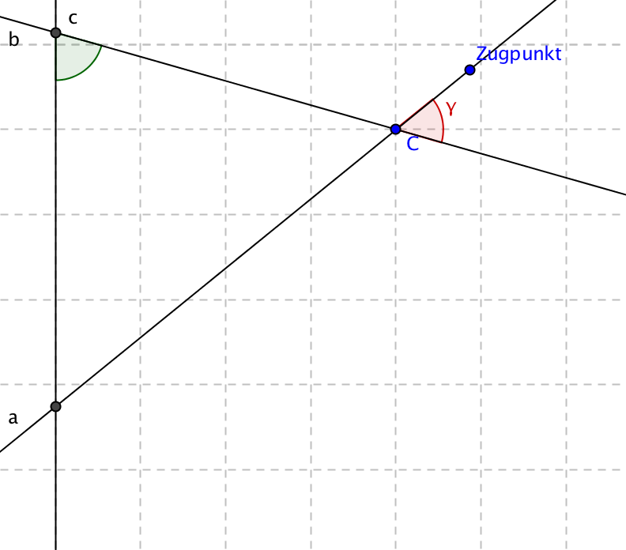
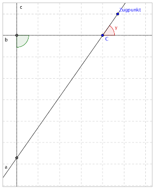
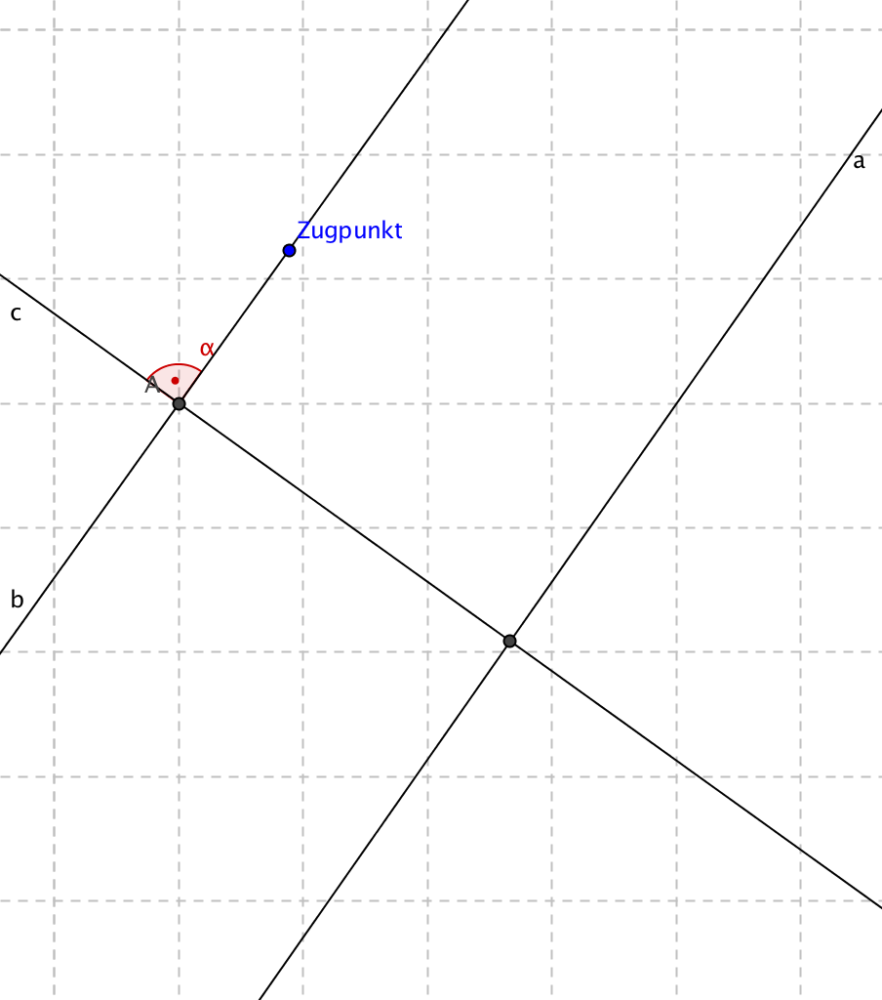

Aufgabe 4.4
Begründen Sie, dass eine Dreifachspiegelung mit drei Schnittpunkten ebenfalls zu einer Schubspiegelung führt.
- Nutzen Sie, dass eine Drehung durch verschiedene Achsenpaare darstellbar ist
- Der Drehwinkel bleibt erhalten, wenn das Zentrum gleich bleibt
- Suchen Sie nach einer äquivalenten Darstellung mit parallelen Achsen
- Verwenden Sie die Eigenschaft der Punktspiegelung (180°-Drehung)
Bei der folgenden Figur bildet die Verknüpfung $s_b\circ s_a$ eine Drehung um den Punkt $C$ und den rot markierten Winkel $\gamma$ (Doppelspiegelung an sich schneidenden Geraden). Solange $\gamma$ konstant bleibt und die beiden Achsen sich in $C$ schneiden, verändert sich auch die resultierende Drehung nicht.

Nun verändern wir die Lage des Achsenpaares $a$, $b$ unter Beibehaltung von $\gamma$ und der Lage des Punktes $C$, so dass sich $b$ und $c$ in einem rechten Winkel schneiden:

Nun wechseln wir die Perspektive und betrachten die Doppelspiegelung $s_c\circ s_b$. Es handelt sich hierbei um eine $180^\circ$-Drehung um bzw. eine Punktspiegelung am Schnittpunkt der beiden Achsen. Belässt man nun $A$ und $\alpha$, kann das Achsenpaar $b$, $c$ so gedreht werden, dass $a$ und $b$ parallel sind, ohne die resultierende Abbildung zu verändern:

Nach Definition handelt es sich hierbei um eine Schubspiegelung: Verschiebung ($s_b\circ s_a$: Doppelspiegelung an parallelen Achsen) und einer Spiegelung ($s_c$), was zu zeigen war.
Im Video: Etappe 6 · Drei Spiegelungen, 2 & 3 Schnittpunkte bei 9:12